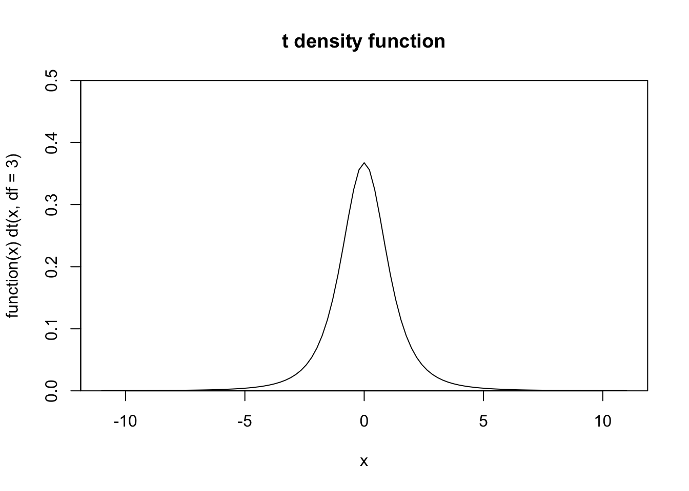
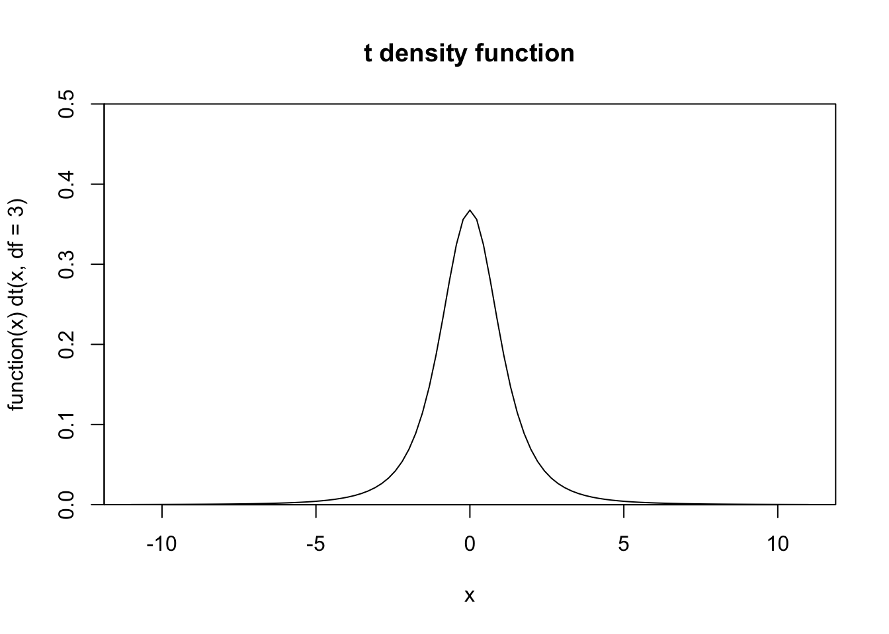
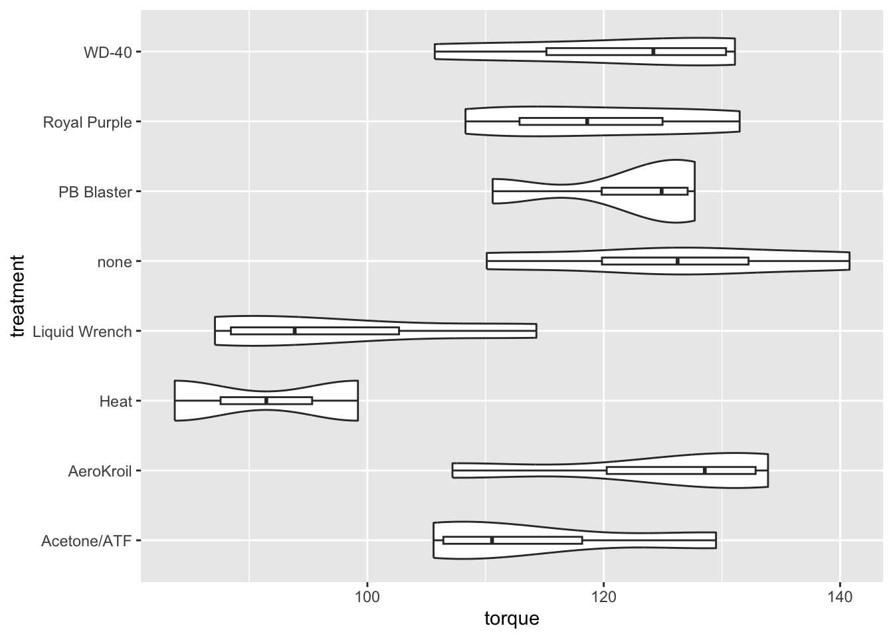

plot(function(x) dt(x, df = 3), -11, 11, ylim = c(0, 0.50), main = "t density function", yaxs = "i")
Modeling \(\bar{x}\), the mean of a random sample from a normally distributed population, requires that the sample elements are
The \(t\)-distribution is useful for small samples (\(n<30\)). It was discovered when a man named Gossett was trying to figure out how few samples of beer he could get away with in tests for the Guinness brewery about 120 years ago. He preferred to remain anonymous at the time because he didn’t want his employers to question his outside activities, otherwise this would probably be called the Gossett’s \(t\)-distribution. Instead, he referred to himself as “A Student” so it came to be known as the Student’s \(t\)-distribution.
For sample sizes over thirty, it converges to looking like the normal distribution, but for smaller samples, it gets more and more peaked and the tails get thicker and thicker. For example, here is the density function for a sample size of 4.
plot(function(x) dt(x, df = 3), -11, 11, ylim = c(0, 0.50), main = "t density function", yaxs = "i")
Bear in mind that the t() function in R has nothing to do with the \(t\)-distribution (it’s for transposing matrices and data frames). Instead, the functions for handling the \(t\)-distribution are the letter t prefaced by d, q, p, or r. You may have noticed that we saw functions like pnorm() and dnorm() when working with the normal distribution. These functions are analogous.
The \(t\)-distribution has \(n-1\) degrees of freedom, so you can tell that the above example has \(n=4\) since \(\text{df}=3\).
Also keep in mind that the mean is always zero for the \(t\)-distribution, so it just has one parameter, df. So in the above example, you could say \(\bar{x}\sim t(3)\).
Analogous to the pnorm() function, you can calculate regions of the \(t\)-distribution using the pt() function. For example, if you conduct a test that returns a \(t\)-statistic of \(-2.10\) and \(n=19\), you can use the following to find out that the area to the left of the statistic is 0.025. (This example and the two following are illustrated in textbook Figure 7.4.)
pt(-2.1,18)[1] 0.0250452Suppose you obtain a \(t\)-statistic of 1.65 on 20 degrees of freedom. How much of the probability is in the upper tail? There are two obvious ways to do this.
pt(1.65,20,lower.tail=FALSE)[1] 0.057280411-pt(1.65,20)[1] 0.05728041Find the probability in both tails for a \(t\)-statistic of \(\pm 3\) and two degrees of freedom.
pt(-3,2)+pt(3,2,lower.tail=FALSE)[1] 0.09546597Textbook example 7.8 asks you to calculate the \(t\)-statistic when you know the proportion. In this case, \(df=18\) and you want to know the \(t\)-statistic corresponding to 0.025 in the upper tail. You can use the qt() function where q stands for quantile. The region 0.025 in the upper tail corresponds to a 95 percent confidence interval because there will be 0.025 in each of the two tails for a total of five percent. The \(t\)-statistic for the lower tail would simply be the negative of the \(t\)-statistic for the upper tail.
qt(0.025,18,lower.tail=FALSE)[1] 2.100922To construct a confidence interval, you’ll generally choose 90 or 95 percent, depending on the sensitivity of the real world problem. Then you’ll plug that into the following formula.
\[ \bar{x} \pm t^*_{df}\frac{s}{\sqrt{n}} \]
This assumes you have already checked the normality and independence constraints.
For the textbook examples, you are given components of the formula. It is quite a bit simpler if you are given the raw data. For example, calculate a 95 percent confidence interval for the body mass in grams of the penguins in the Palmer penguins data frame.
library(palmerpenguins)
model <- lm(body_mass_g ~ 1,penguins)
confint(model,level=0.95) 2.5 % 97.5 %
(Intercept) 4116.458 4287.05The above incantation may seem a little mysterious but you’ll explore it in excruciating detail when you learn linear regression.
The textbook gives a lengthy example of the runner times of the Cherry Blossom race. I assume that the data are the run10samp and run17samp data frames from the textbook website, so I downloaded the RData versions of them and loaded them as follows.
load(paste0(Sys.getenv("STATS_DATA_DIR"),"/run10samp.rda"))
load(paste0(Sys.getenv("STATS_DATA_DIR"),"/run17samp.rda"))
t.test(run17samp$clock_sec/60,mu=93.29,alternative="t")
One Sample t-test
data: run17samp$clock_sec/60
t = 1.9776, df = 99, p-value = 0.05075
alternative hypothesis: true mean is not equal to 93.29
95 percent confidence interval:
93.26973 105.46227
sample estimates:
mean of x
99.366 Note that neither time measure, clock_sec nor net_sec correspond to the mean in the textbook. The \(t\)-statistic is smaller and the \(p\)-value is larger than that given in the textbook. With a \(p\)-value of 0.05075 it is unclear whether you would reject the null hypothesis. Certainly the old mean is within, though at the edge, of the confidence interval. Personally, I would fail to reject in this case.
Suppose you want to know if two data frames were drawn from the same distribution or if they differ.
The textbook example is of the mean prices of textbooks on Amazon and in the UCLA campus bookstore. The data appear to be the textbooks data frame on the textbook website, although the statistics are different and the textbook says that there were two such samples (only one is on the website that I could find). Because they have precomputed the difference as the diff column, you can do this the same way as for a one sample test.
load(paste0(Sys.getenv("STATS_DATA_DIR"),"/textbooks.rda"))
with(textbooks,t.test(diff))
One Sample t-test
data: diff
t = 7.6488, df = 72, p-value = 6.928e-11
alternative hypothesis: true mean is not equal to 0
95 percent confidence interval:
9.435636 16.087652
sample estimates:
mean of x
12.76164 Note that the default is that the difference is 0 and the 95 percent confidence interval is quite far from including 0. Also, the \(p\)-value is infinitesimal. We definitely reject the null hypothesis that the stores have similar prices.
If you didn’t have the diff column, you could get the same result by saying the following.
with(textbooks,t.test(ucla_new,amaz_new,paired=TRUE))
Paired t-test
data: ucla_new and amaz_new
t = 7.6488, df = 72, p-value = 6.928e-11
alternative hypothesis: true mean difference is not equal to 0
95 percent confidence interval:
9.435636 16.087652
sample estimates:
mean difference
12.76164 In the previous section, you considered the means of the differences but in this section you consider the differences of the means. In the Amazon and UCLA example, the items were paired and we subtracted the price of a particular title sold by one seller from the price of the same title sold by the other seller. But what if we have data that is not paired like this? The textbook gives an example of a radical stem cell treatment given to sheep. One of two treatments is given to each sheep, but there is no correspondence between individual pairs of sheep.
In this case, there may be different variance between the two groups, as well as different means. So the standard error is calculated as
\[\text{SE}=\sqrt{\frac{\sigma^2_1}{n_1}+\frac{\sigma^2_2}{n_2}}\]
Notice that this formula implies that the samples could differ in size as well as variance.
For the sheep example, heart pumping capacity was measured, where more is better. The stem_cell data frame on the textbook website seems to be the appropriate data frame here. Conducting the test in R follows.
load(paste0(Sys.getenv("STATS_DATA_DIR"),"/stem_cell.rda"))
with(stem_cell,t.test(after-before~trmt,var.equal=FALSE))
Welch Two Sample t-test
data: after - before by trmt
t = -4.0073, df = 12.225, p-value = 0.001678
alternative hypothesis: true difference in means between group ctrl and group esc is not equal to 0
95 percent confidence interval:
-12.083750 -3.582916
sample estimates:
mean in group ctrl mean in group esc
-4.333333 3.500000 The result is a statistically significant difference between the sheep in the control group and the sheep treated with stem cells. The sheep in the stem cell group enjoyed a 3.5 unit increase in heart pumping capacity, while the poor sheep in the control group lost four and a third units. Of course, the practical question you have to ask yourself is whether these numbers have a practical significance. You would need domain knowledge to tell whether 3.5 units is a lot of heart pumping capacity!
The pictures in section 7.4, particularly the two on page 280 of the textbook, are essential for understanding power calculation, so let’s use the textbook exclusively for this section. To do the calculations in R, you can use the pwr package. However, for the weekly exercises, please use the method described in the Diez, Çetinkaya-Rundel, and Barr (2019) book instead of using the pwr package. This is simply so you understand the meaning of the calculations. After you’ve done it once, I’ll describe the pwr approach.
All I want to say to preface our look at the textbook is to define the terms power and \(\alpha\). The statistical term power refers to the probability of rejecting the null hypothesis when it is false. The greek letter \(\alpha\), pronounced alpha, refers to the probability of rejecting the null hypothesis when it is true. It is typical in practice to use \(\alpha = 0.05\) except in life or death cases (where it is set to 0.01) and to use power\(=0.8\).
The textbook makes three important observations about the diagnostics for ANOVA:
Textbook exercise 7.54 compares eight methods for loosening rusty bolts. Four samples were collected for each method and the results are in the penetrating_oil data frame on the textbook website. You can conduct an ANOVA test on the results using R as follows.
load(paste0(Sys.getenv("STATS_DATA_DIR"),"/penetrating_oil.rda"))
with(penetrating_oil,anova(lm(torque~treatment)))Analysis of Variance Table
Response: torque
Df Sum Sq Mean Sq F value Pr(>F)
treatment 7 3603.4 514.78 4.0263 0.005569 **
Residuals 22 2812.8 127.85
---
Signif. codes: 0 '***' 0.001 '**' 0.01 '*' 0.05 '.' 0.1 ' ' 1The table shows that the numerator degrees of freedom are \(k-1=7\). Keep in mind that \(k\) is the number of groups, which must therefore be eight. The denominator degrees of freedom are \(n-k=22\), so there must be a total of 30 samples. Yet there are eight groups, suggesting four samples per group. Examining the data closely, you will find that there are only two samples for heat and four for each of the others.
Here you are comparing whether any of the eight means of torque differ. They certainly seem to, with a large \(F\)-statistic and a small \(p\)-value. It might be helpful to visualize the differences with a combination violin plot and boxplot. There are really too few samples for each treatment.
library(tidyverse)
penetrating_oil |>
ggplot(aes(torque,treatment)) +
geom_violin() +
geom_boxplot(width=0.1)